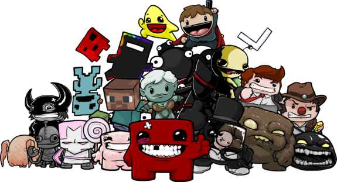

Esta é uma mensagem acessível para pessoas deficientes visuais
Sobre o Core
|
Henrique Marangon, ou Core, é um criador de conteúdo do YouTube do canal Core (anteriormente Core das Antigas). Começou a trabalhar na plataforma em 2013, focado em vídeos de jogos antigos e RPGs e atualmente independentes. Em 2015, aproveitou a onda de Undertale para poder focar 100% do seu tempo no seu trabalho na internet, flexibilizando seu formato, o Core conseguiu muitas visualizações e conquistou um novo público e utilizou do sucesso de Undertale para falar sobre vários jogos de RPG e independentes, criando uma nova onda de vídeos no seu canal. |

|
|---|
|  |
Se encontrando nesse meio de jogos independentes que fomentam várias teorias, Core passou a cobrir conteúdo relacionado a jogos como Five Nights at Freddy's, Doki Doki Literature Club e Bendy and the Ink Machine. Atualmente, ele grava vídeos de diversos conteúdos, principalmente de Five Nights at Freddy, Poppy Play Time e Friday Night Funkin. |
|---|